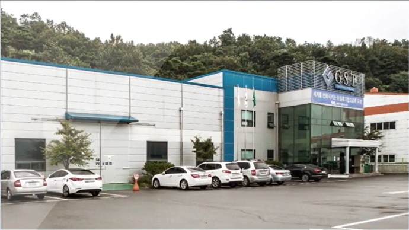
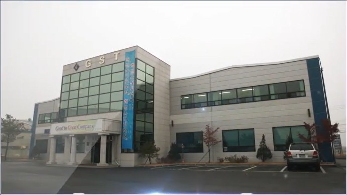
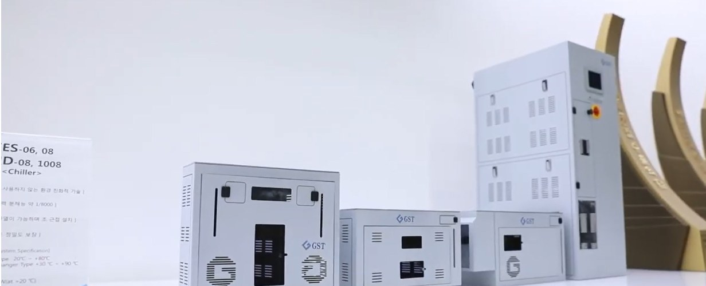
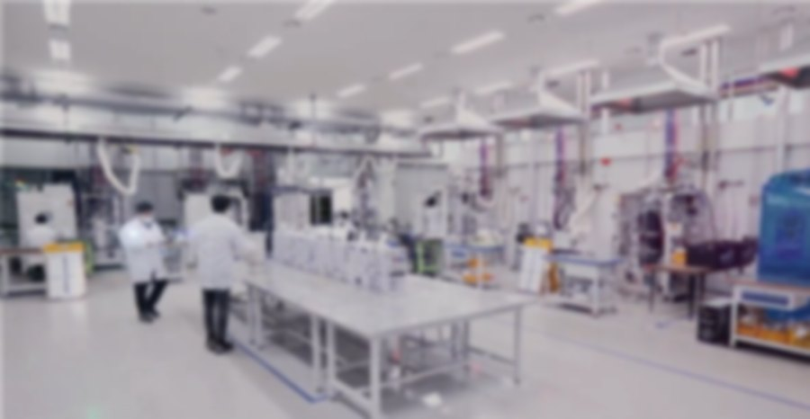

가가가가1🔥🌍🌵🦗🏆☠️✨🎉❄️
지난 25년,
For 25 years, nothing happened at GST.
예를 들면,
실란(SiH₄) 가스는 공기와 닿는 순간
스스로 불이 붙습니다.
스스로 불이 붙습니다.
☠️
🔥
없었습니다.
Silane ignites on contact with air. — It didn't happen.
그리고,
SF₆ 한 번 새면 3,200년을 갑니다.
이산화탄소의 23,500배 — 손자의 손자까지.
이산화탄소의 23,500배 — 손자의 손자까지.
2026
🌍
…년
없었습니다.
One SF₆ leak lasts up to 3,200 years — 23,500× CO₂. — It didn't happen.
그리고,
식각 공정은 온도가 0.1℃만 흔들려도
웨이퍼가 상합니다.
웨이퍼가 상합니다.
25.0
❄️
없었습니다.
Etch demands ±0.1℃. A drift ruins the wafer. — It didn't happen.
그리고,
반도체 공장이 멈추면,
웨이퍼 수만 장을 버립니다.
웨이퍼 수만 장을 버립니다.
⚠ LINE STOP
없었습니다.
365일 24시간 가동
When a fab stops, tens of thousands of wafers are scrapped. — It didn't happen.
이 모든 «아무 일»의 뒤에는
스크러버와 칠러가
있었습니다.
있었습니다.
365일 24시간 × 25년 = 약 219,000시간.

Behind every "nothing" — a scrubber and a chiller. 24/7 for 25 years: about 219,000 hours.
아무 일도 안 일어나게 하려고,
우리는 꽤 많은 일을 했습니다.
우리는 꽤 많은 일을 했습니다.
To make nothing happen, we did quite a lot.
2001. 10. 01
퇴직금 ₩0으로 시작했습니다.
일본이 독점하던 스크러버를, 우리 손으로.

✨
Oct 1, 2001 — started with ₩5,000,000 in severance pay, and localized the scrubber Japan had monopolized.

2006. 02. 01
코스닥 상장.
공모가 5,800 → 시초가 5,800 ▲ 34.5%
Feb 1, 2006 — listed on KOSDAQ. Up 34.5% on day one.
화성에서, 여섯 나라로.
From Hwaseong to six countries.

수출의 탑
🏆
그리고 창립 20주년,
1억불 수출의 탑.
1억불 수출의 탑.
Export Tower awards: $5M (2007) → $10M → $20M → $30M → $100M (2021).

그리고
다음 25년은,
이미 시작됐습니다.
이미 시작됐습니다.
이번엔 AI 데이터센터의 열을 — 액침냉각
2025년 첫 상업 납품 · 2026년 실증 운영

And the next 25 years have already begun — immersion cooling for AI data centers.
그래서 오늘도,
아무 일도 없습니다.
아무 일도 없습니다.
아무 일도 없게 하는 것.
그게 우리가 25년 동안 한 일입니다.
그게 우리가 25년 동안 한 일입니다.
So today, again — nothing happens.
Making sure nothing happens. That's what we've done for 25 years.
다음 25년도, 아무 일 없이.
GST GROUP
GST
2001창립 25주년2026
BUILD UP GST
GST
스크러버 · 칠러
액침냉각
액침냉각
EST
반도체 부품 · 배관보온
무전력 냉장냉동
무전력 냉장냉동
ROBOCARE
시니어 · 발달장애인을 위한
로봇과 AI
로봇과 AI
Here’s to 25 more uneventful years.
GST GROUP — GST · EST · ROBOCARE.
GST 25th Anniversary.
GST 25th Anniversary.